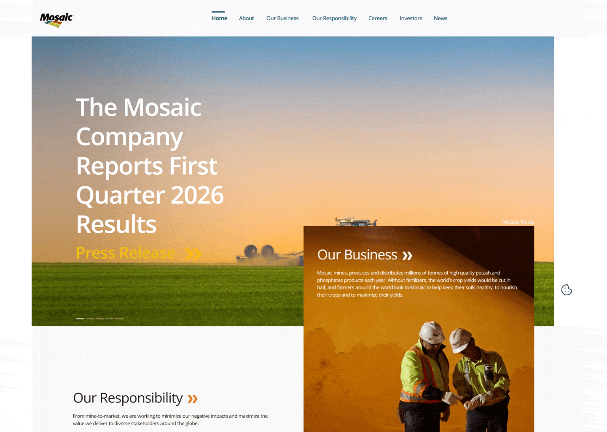

Web Redesign —
Discovery & Design Direction
Mosaic's web presence had grown into a sprawling, inconsistent collection of sites — hurting the brand more than helping it. Visitors rarely made it past the homepage, most traffic arrived cold through Google search rather than site navigation, and articles averaged just 8 seconds of read time. The information architecture buried content too deep to find, undermining the premium feel a Fortune 500 company needs.
The existing web experience was heavily fragmented across the numerous domains and websites owned by Mosaic. Across these properties, there was no cohesive visual language—inconsistent typography, photography treatments, and navigation patterns made the ecosystem feel like multiple disparate companies rather than a single Fortune 500 brand.

interviews, content strategy, information architecture, and visual direction. We consolidated dozens of regional websites into two core domains: mosaicco.com (corporate) and mosaicdirect.com (marketing). By structuring regional operations within a single platform, we eliminated redundant properties, unified the global brand, and established a tokenized design system to ensure long-term consistency.


To ensure long-term consistency across both platforms, I established a tokenized design system — component library, typography scale, color system, and layout patterns — built to scale across teams and handoff cleanly to development.
The consolidation brings Mosaic's fragmented web presence — 10+ disconnected properties — under two focused platforms: a corporate site and a South America marketing site. A unified visual system, tokenized design language, and restructured information architecture replace years of inconsistent brand expression across domains. The result is a web presence that reflects the scale and credibility of a Fortune 500 company, built to perform rather than just exist. Design fully approved by leadership, build-ready assets on the shelf.
Design direction fully approved by leadership and moved into development. Project currently paused due to budget conditions — build-ready assets on the shelf.